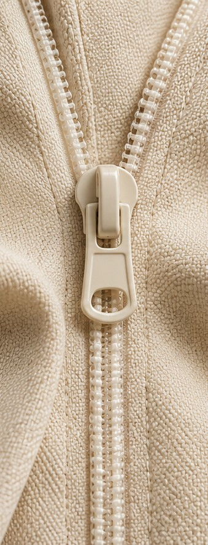
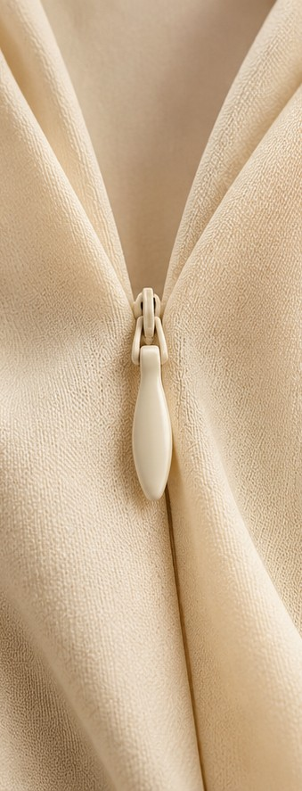
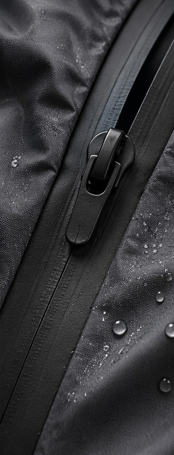

THE ART OF FASTENING ✦ INDIAN ZIPP HOUSE
EST. IN DESIGN / MADE FOR EVERY DETAIL
THE FINISHING TOUCH THAT CHANGES EVERYTHING
It's all in
the details.
The perfect fastening is never an afterthought. Discover a considered world of zippers for apparel, accessories and everything in between.





Small component.
Remarkable impact.
Sometimes the most important part of a design is the one you almost overlook. Explore closures that complement the fabric, finish and function of your next creation.
Get to know Indian Zipp House ↗02 / EXPLORE THE RANGE
A zipper for
every vision.
↗A striking finish for denim, outerwear and accessories.
Everyday versatility, elegantly considered.
↗Contemporary form and bold texture.
Subtle closures that let the garment shine.
Technical style for performance-led designs.
03 / MADE FOR YOUR IDEAS
Function is
beautiful.
From delicate fashion pieces to everyday essentials, the right zipper brings the whole product together. Browse our categories or tell us what you're looking for.
Discuss your requirement ↗04 / LET'S COLLABORATE
The next great detail
starts here.
Tell us about your product and the zipper you're looking for.
Make an enquiry ↗